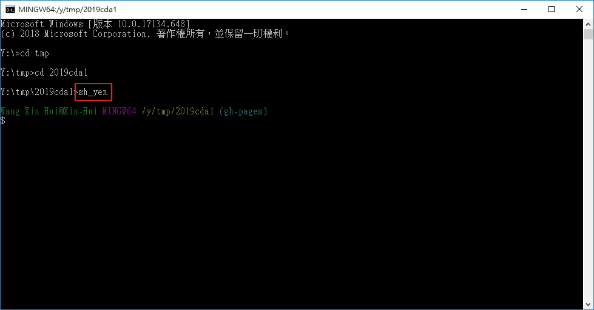
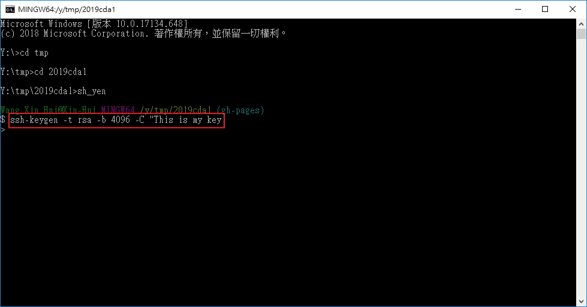
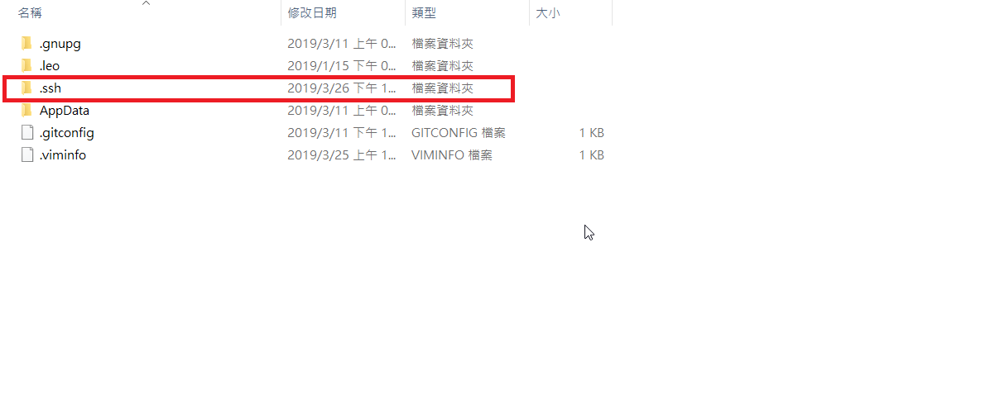
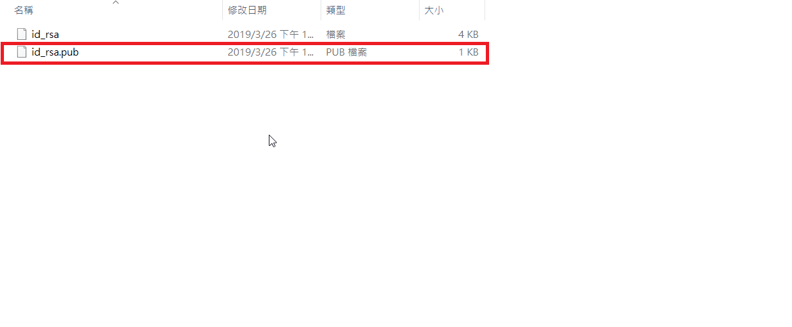
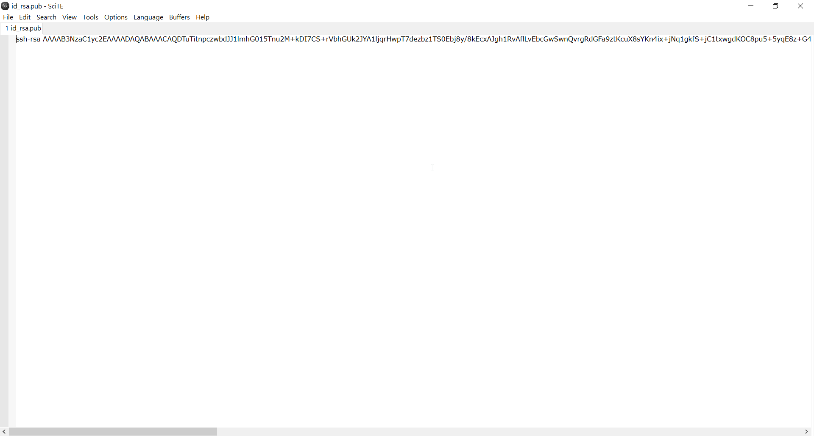
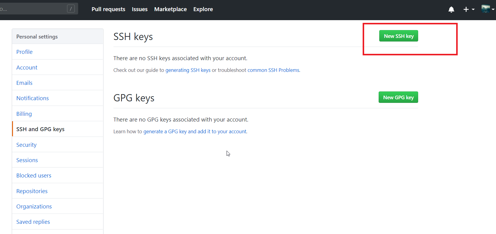
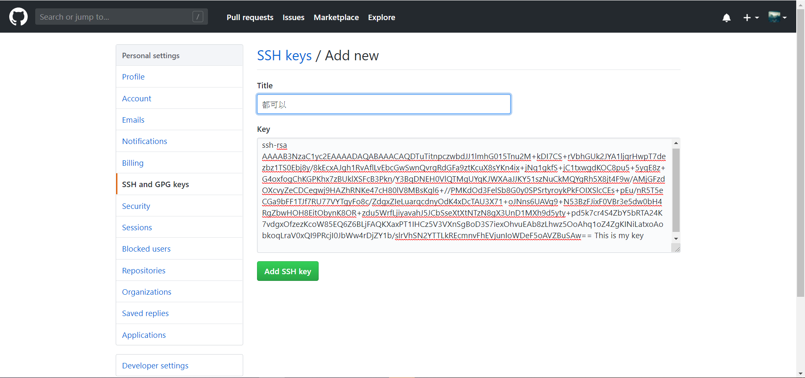

ungit-建立 << Previous Next >> V-rep
ungit-建立 << Previous Next >> V-rep
SSH Public Key
(一)關閉操作系統儲存 Github 帳號密碼設定
1.使用指令「git config --edit --system」，帶出 vi 編輯器。
2.編輯 git 指令所使用的系統設定(按鍵H,J,K,L對應控制左下上右)。
3.按a進入編輯模式，編輯模式最底下會顯示「-- INSERT --」。

4.按BACKSPACE刪除最後一行如下圖。

5.刪除完按ESC鍵離開編輯模式。
6.輸入「:wq」存檔並關閉。

(二)建立 OpenSSH 格式的 Private 與 Public Keys
1.在可攜系統的命令列視窗輸入「sh_yen」，執行 Git 的 shell。
2.使用「ssh-keygen -t rsa -b 4096 -C "This is my key"」。

3.會在y:\home\.ssh\id_rsa與id_rsa.pub建立Private 與 Public 金鑰。(在home裡出現ssh的資料夾)4.將 .ssh資料夾裡的id_rsa.pub 的內容轉貼白色視窗裡


5.到github點選帳號下的settings再點選new ssh key

6.並將白色內容複製到 Github 帳號 settings 中 SSH and GPG keys 項目內的 SSH Public Key 區再點選Add ssh key就完成了。

ungit-建立 << Previous Next >> V-rep